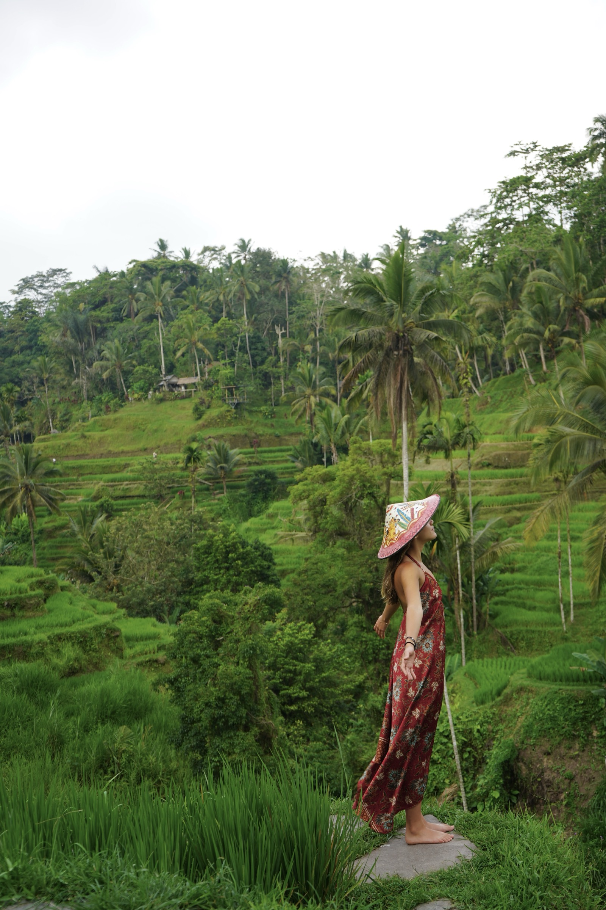

Naturaleza · Bienestar · Aventura
Viajar
con propósito
Una forma diferente de viajar: descubrir, conectar y vivir cada destino de forma consciente
Ver destinosQuiénes somos
Cuidamos lo que conocemos y amamos
VOIA nace de las ganas de descubrir el mundo de una forma diferente: más cercana, más auténtica y más consciente. Creamos viajes en grupos pequeños que combinan aventura, naturaleza, cultura y bienestar, buscando experiencias que nos saquen de lo cotidiano y nos permitan conectar de verdad con cada lugar, con las personas que conocemos en el camino y también con nosotros mismos.
Creemos que viajar debe dejar huellas positivas. Por eso trabajamos con guías locales, comunidades y operadores que comparten nuestra forma de entender el turismo: respetando los ecosistemas, cuidando la vida silvestre y procurando que parte del valor generado permanezca en cada destino. No viajamos solo para conocer lugares nuevos, sino para aprender de ellos y volver a casa con una mirada diferente del mundo.

Destinos
Elige tu próximo viaje
Cada destino tiene su propia página con la descripción, el itinerario y la galería.
Internacionales
Nacionales
VOIA Viajar
para aprender
VOIA Aprender
para cuidar
En VOIA un viaje no termina cuando vuelves a casa. Diseñamos cada ruta para acercarte a su cultura y naturaleza. Buscamos aprender de las personas que nos reciben e impactar de forma positiva cada lugar. Estos son nuestros principios.
-
Grupos pequeños, huellas positivas
Viajamos en grupos pequeños para conocernos, compartir la aventura y llegar a lugares donde un grupo grande tendría más dificultades. En cada destino buscamos aportar algo positivo y dejar los lugares mejor de como los encontramos.
-
Historias contadas por su propia gente
Recorremos cada destino con guías locales que conocen sus caminos, su historia y su vida cotidiana. Nos ayudan a reconocer lo que vemos y comparten su manera de vivir y entender el lugar que visitamos.
-
Encuentros éticos con la vida silvestre
Ver animales en libertad es una de las grandes joyas del viaje. Mantenemos la distancia, evitamos alimentarlos o perseguirlos y seguimos las indicaciones de los guías. Cada encuentro depende de los animales y de las condiciones.
-
Comunidades que se benefician
Elegimos alojamientos, restaurantes, guías y otros servicios locales para que parte del dinero del viaje llegue a quienes viven en el destino. Sus negocios y su trabajo son parte de lo que hace posible nuestra experiencia.
-
Viajes que dejan aprendizaje
Queremos que te lleves algo más que buenas fotos. Por eso, en cada viaje buscamos conocer la cultura y tradiciones de cada lugar, así como los retos que enfrentan. Que vuelvas con historias, conocimientos y una mirada más consciente sobre los lugares que visitas.
Contacto
¿Listo para tu próxima aventura?
Escríbenos por WhatsApp y te ayudamos a elegir el viaje y las fechas que mejor te acomoden.
Escríbenos por WhatsApp